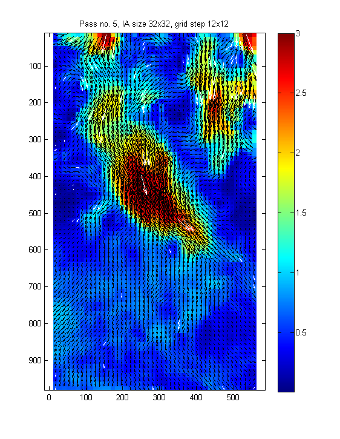
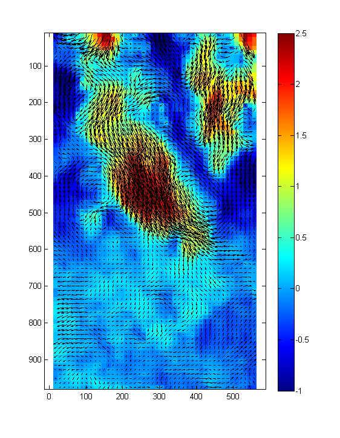

Example 05 - Simple treatment of image sequence
This example demonstrates the simplest possible treatment of a sequence of PIV images using PIVsuite. These images shows a turbulent flow in a channel below a set of injections nozzles. Images were recorded with a high-speed camera and laser for fired at constant frequency.
Contents
Before running PIVsuite
Initialize the variable pivPar, in which parameters of PIV algorithm (such as interrogation area size) are defined. Initialize also variable pivData, to which results will be stored.
clear; pivPar = []; % variable for settings pivData = []; % variable for storing results
Define image pairs to be treated. It is assumed that the images are stored in a folder: we will get a list of filenames of such images
% Set folder with treated images imagePath = ['..',filesep,'Data',filesep,'Test Tububu']; % get list of images in the folder aux = dir([imagePath, filesep, '*.bmp']); for kk = 1:numel(aux) fileList{kk} = [imagePath, filesep, aux(kk).name]; %#ok<SAGROW> end fileList = sort(fileList);
The images were acquired at constant frequency. The second image in each pair can be used as the first image in the next pair, and the image pair useful for PIV treatment has sequence 1-2, 2-3, 3-4, 4-5 etc. Nevertheless, we will treat image pairs consisting of images 1-2, 5-6, 9-10, ..., 37-38 in this example for reasonable treatment time.
pivPar.seqPairInterval = 4; % set the interval between image pairs pivPar.seqSeqDiff = 1; % the second image in each pair is one frame after the first image % use this command to create a list of files, corresponding to the first and second images in each pair [im1,im2] = pivCreateImageSequence(fileList,pivPar);
Now, we will set other common parameters:
pivPar.iaSizeX = [64 32 32 32 32]; % interrogation area size for five passes pivPar.iaStepX = [32 16 12 12 12]; % grid spacing for five passes pivPar.qvPair = {... % define plot shown between iterations 'Umag','clipHi',3,... % plot displacement magnitude, clip to 3 px 'quiver','selectStat','valid','linespec','-k',... % show valid vectors in black 'quiver','selectStat','replaced','linespec','-w'}; % show replaced vectors in white
Set all other parameters to defaults. Note that defaults are different for sequence than for image pairs
[pivPar, pivData] = pivParams(pivData,pivPar,'defaultsSeq');
figure(1);
Run the analysis
For PIV analysis of an image pair, execute the following command (treatment migth take from seconds to few minutes):
[pivData] = pivAnalyzeImageSequence(im1,im2,pivData,pivPar);
Treating pair 1 of 10 (???)... Accomplished in 9.88 s, last pass 2.41 s, Subpix failure 0.30 %, Median-test rejection 2.60 % Treating pair 2 of 10 (???)... Accomplished in 9.78 s, last pass 2.36 s, Subpix failure 0.16 %, Median-test rejection 2.90 % Treating pair 3 of 10 (???)... Accomplished in 9.84 s, last pass 2.40 s, Subpix failure 0.38 %, Median-test rejection 3.11 % Treating pair 4 of 10 (???)... Accomplished in 9.78 s, last pass 2.36 s, Subpix failure 0.27 %, Median-test rejection 3.25 % Treating pair 5 of 10 (???)... Accomplished in 10.69 s, last pass 2.36 s, Subpix failure 0.48 %, Median-test rejection 3.25 % Treating pair 6 of 10 (???)... Accomplished in 9.83 s, last pass 2.38 s, Subpix failure 0.46 %, Median-test rejection 2.42 % Treating pair 7 of 10 (???)... Accomplished in 9.84 s, last pass 2.36 s, Subpix failure 0.30 %, Median-test rejection 2.90 % Treating pair 8 of 10 (???)... Accomplished in 9.80 s, last pass 2.36 s, Subpix failure 0.35 %, Median-test rejection 2.74 % Treating pair 9 of 10 (???)... Accomplished in 12.42 s, last pass 2.36 s, Subpix failure 0.24 %, Median-test rejection 2.68 % Treating pair 10 of 10 (???)... Accomplished in 9.81 s, last pass 2.36 s, Subpix failure 0.21 %, Median-test rejection 2.63 % Replacing spurious velocity vectors... Finished in 0.01 s.
Visualize the results
Show a movie of velocity field with subtracted mean velocity (velocity field "as seen by the mean flow"):
% compute mean velocity from the bottom-most part of velocity field Vmean = pivData.V(ceil(2/3*size(pivData.V,1)):end,:,:); % velocity in bottom-most third of image Vmean = mean(reshape(Vmean,numel(Vmean),1)); % mean velocity figure(2); for kr = 1:5 % repeat movie three times for kt = 1:pivData.Nt pivQuiver(pivData,'TimeSlice',kt,... % choose data and time to show 'V','subtractV',Vmean,... % vertical velocity, subtract Vmean from it 'clipLo',-1,'clipHi',2.5,... % shown range 'quiver','subtractV',Vmean,... % velocity vectors, subtract mean velocity 'selectStat','valid'); % show only valid velocity vectors drawnow; pause(0.1); end end